1. Project Overview
Project Title
UNT Navigator
Description
An integrated mobile solution designed to help University of North Texas students easily find campus locations, navigate to classes, and discover events.
Role in the Team
UX Design Project Group Member (Responsible for aspects of research, ideation, wireframing, prototyping, and usability testing alongside team members).
Duration
14 Weeks
Tools Used
- Figma (Design, Prototyping)
- Google Docs (Ideation, UX Interview Documentation, Design System
2. Problem Statement
What user problem or opportunity was being addressed?
Navigating a large university campus like the University of North Texas (UNT) presents significant hurdles, particularly for new and visiting students. Current methods often involve static PDF maps, general-purpose navigation apps lacking campus-specific details (like class schedules and campus events), or relying on asking others for directions.
Why does it matter?
This lack of effective navigation tools leads to:
- Increased stress and anxiety, especially before classes or important appointments.
- Students being late for classes, meetings, or exams.
- Difficulty discovering and accessing valuable campus resources, services, and events.
- A less welcoming and potentially overwhelming initial experience for new members of the UNT community.
Our initial research confirmed these pain points were common, highlighting an opportunity to create a dedicated, integrated solution.
3. Goals & Success Metrics
What did success look like?
The primary goal was to design an intuitive, integrated mobile application that helps UNT students:
- Easily find campus buildings based on class schedule, study areas,dining halls, and points of interest.
- Seamlessly navigate to their scheduled classes by integrating with their Canvas schedule.
- Discover relevant campus events and resources happening near them.
- Reduce the stress and time associated with campus navigation.
Any measurable outcomes or hypotheses?
We hypothesized that a dedicated app with these features would lead to:
- Metric 1: A reduction in student stress levels related to finding classes.
- Metric 2: Increased user confidence in navigating the campus independently.
- Metric 3: Faster task completion times for finding a specific building or event compared to using existing methods.
- Metric 4: High user satisfaction scores (e.g., scoring >4/5 on a satisfaction scale) for core features like Canvas integration and navigation.
4. Research Process
To ground our design decisions in real user needs, we conducted user research primarily through interviews with current UNT students. Our goal was to understand their existing navigation habits, how they managed their schedules, pain points they encountered on campus, and features they desired in a potential solution.
User Personas
Based on our research and our experience as college students, we developed a user persona to represent typical UNT students who would benefit from the app. This helped us maintain focus on user needs throughout the design process.
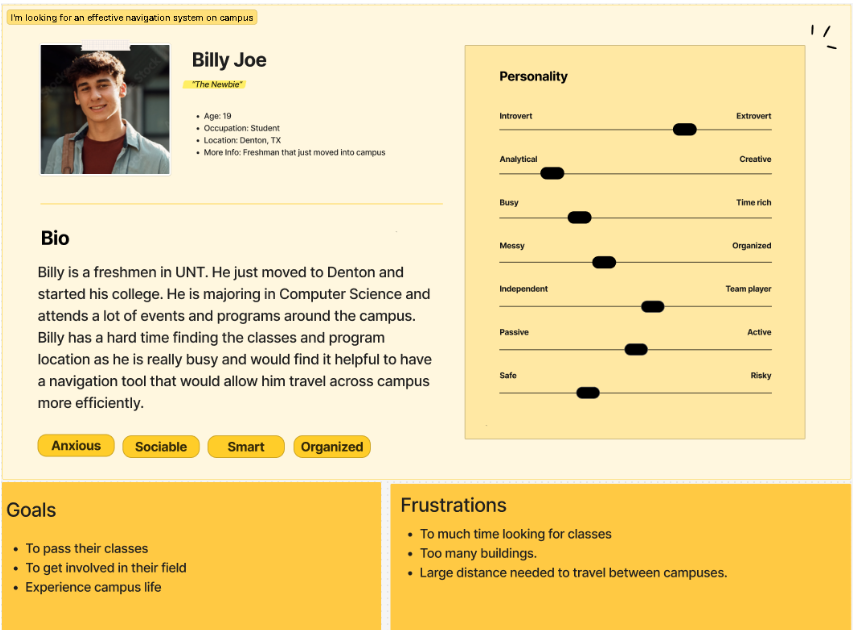
Empathy Maps & Journey Maps
We utilized journey maps to visualize the steps, thoughts, and feelings of a student trying to complete a key task, such as finding a classroom for the first time. This helped identify specific pain points and opportunities for improvement.
[Optional: Briefly mention Empathy Maps if created - "Empathy maps helped us delve deeper into what students might be thinking, feeling, saying, and doing regarding campus navigation."]

User Stories
We formulated user stories to capture functional requirements from the user's perspective, such as:
- "As a new student, I want to connect my Canvas account so that my class schedule automatically appears in the app with locations."
- "As a student running late, I want to quickly get walking directions to my next class building so that I can arrive on time."
- "As a student looking for food, I want to see nearby dining options and their hours so that I can decide where to eat."
- "As a student who is bored on campus, I want to conveniently see events that are happening around me."
Key User Research Insights
- A strong desire for **direct integration with the Canvas schedule** to automatically link classes to map locations was frequently expressed.
- Significant frustration exists regarding the **lack of detail in general map applications** (like Google Maps or Apple Maps) for specific UNT building entrances, room numbers, and pedestrian pathways.
- Finding **specific rooms within large, unfamiliar buildings** was a common challenge.
- Students showed interest in a **centralized, easily accessible hub for campus event information**.
- Ease of use and speed were critical; students often need directions quickly between classes.
5. Ideation & Planning
How did you brainstorm?
We initiated the ideation phase using rapid sketching techniques, specifically the **Crazy 8s exercise**. Each team member sketched eight distinct ideas or variations for key app screens (like the map view, class list, event discovery) in eight minutes. This allowed us to quickly generate a wide range of possibilities without initial judgment.
Following the sketching, we presented our ideas, discussed the pros and cons, and used checkmark voting to identify the most promising concepts or elements to carry forward into wireframing.
Initial Sketches (Crazy 8s Examples)
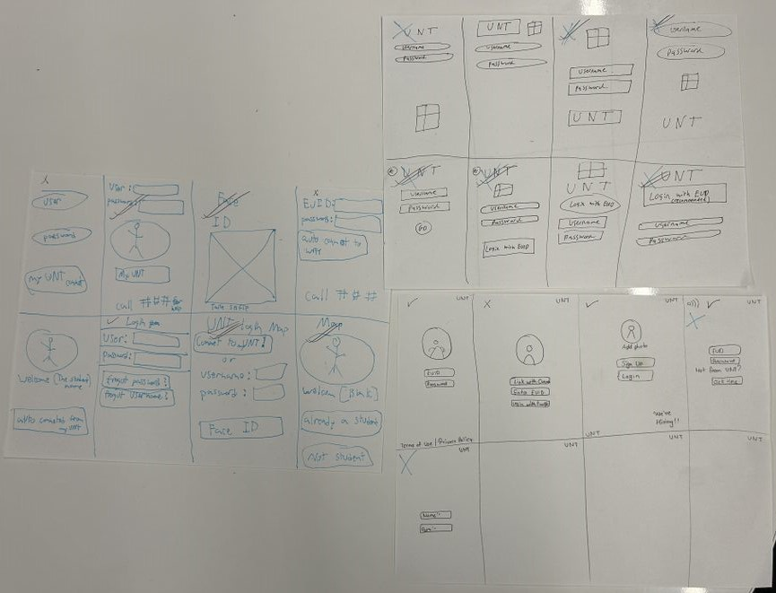
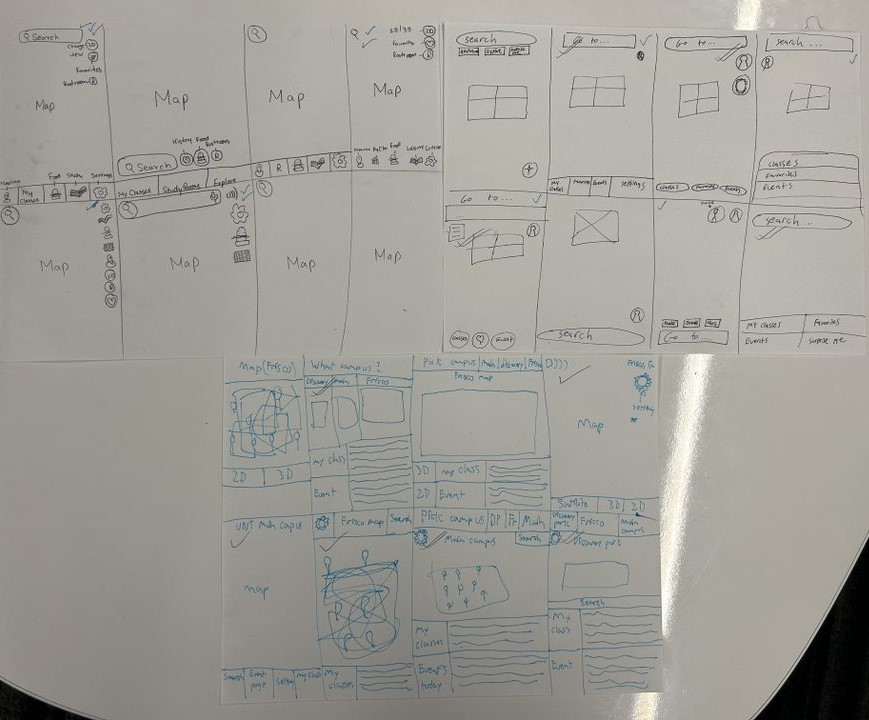


Examples of Crazy 8 sketches exploring different UI solutions for core app features.
Key Ideas Generated and Narrowed Down
Our brainstorming generated ideas around:
- Various map interaction models.
- Different ways to display class schedules (list view, calendar view, integrated map pins).
- Filtering and categorization options for events and points of interest.
- Integration points (Canvas vs MyUNT).
- Bottom navigation structure vs. hamburger menu.
Through discussion and voting, we prioritized a bottom navigation structure for core features (Map, Near Me, Classes, Events, Settings), a list view for classes with easy access to navigation, and robust filtering options for discovery features.
6. Storyboarding
Paper Prototyping
We mapped out the primary user journeys to ensure a logical and efficient path through the app. This image illustrates three different users flows in our app.
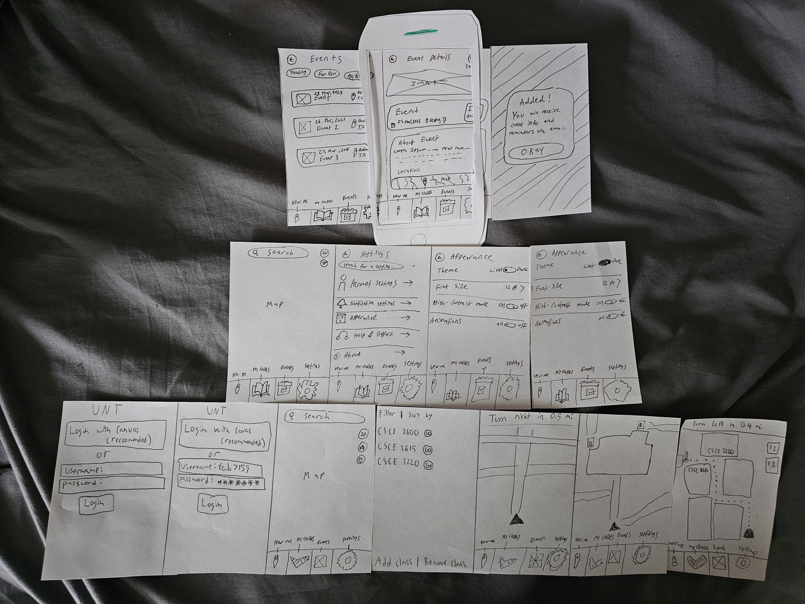
Storyboards / Task Flows
To better visualize the user experience for key tasks, we created storyboards. These helped illustrate the sequence of screens and interactions required to achieve specific goals within the app.
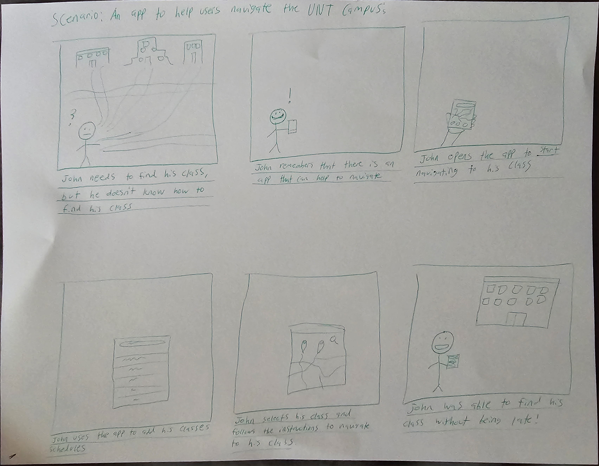
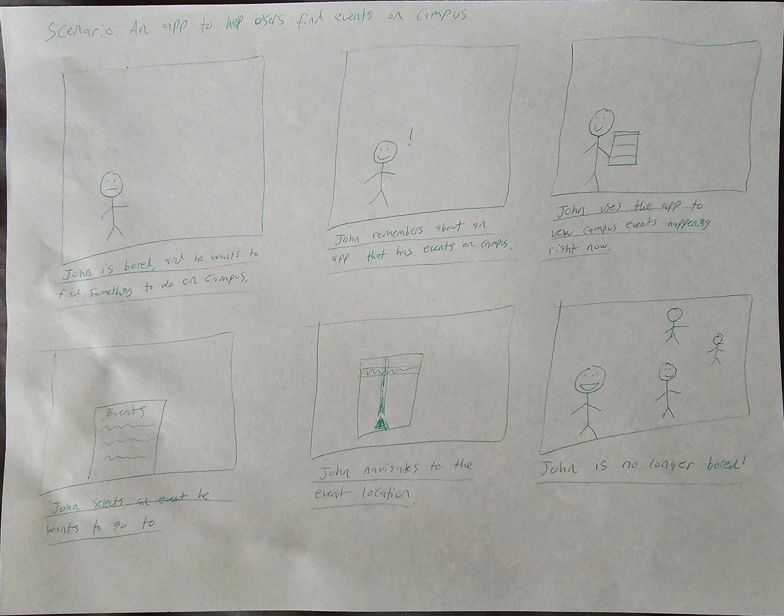
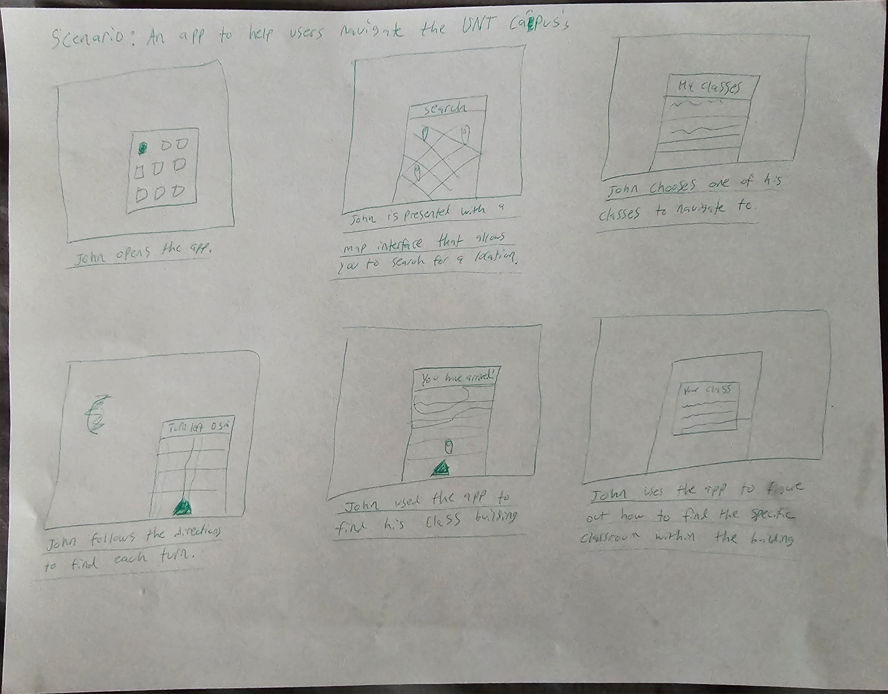
Visual examples of key task flows or storyboards.
Description of Core Interactions
Key interactions were designed to be straightforward:
- Navigation Initiation: Clearly labeled buttons ("Start Navigation", "Get Directions") trigger the turn-by-turn map view.
- Filtering: Chip-style filter buttons allow users to quickly narrow down lists in 'Near Me' and 'Events'.
- Canvas Sync: A simple, guided process prompts users to connect their UNT account via SSO upon first use or through settings.
- Bottom Navigation: Provides persistent access to the five main sections of the app.
7. Information Architecture
Information Architecture (Site Map)
We developed a site map to define the overall structure and hierarchy of the app's content and features. The goal was to create a clear and predictable organization, making it easy for users to find what they need.

Discussion of How Content Was Organized
The structure is based around five core pillars accessible via the bottom navigation bar:
- Map: The central hub for spatial orientation, searching, and initiating navigation.
- Near Me: Focused on discovering points of interest (dining, services, academic buildings, etc.) relative to the user's current location.
- Classes: Dedicated to the user's personal class schedule, linked directly from Canvas.
- Events: A curated list of official campus events, filterable and searchable.
- Settings: Houses account management, Canvas integration status, appearance preferences, and support information.
This task-oriented structure allows users to quickly jump to the section most relevant to their immediate goal (e.g., finding a class vs. finding lunch).
8. Low-Fidelity Prototyping
Low-Fidelity Wireframes
We translated our prioritized ideas and structural decisions into low-fidelity wireframes using Figma. These focused on layout, content placement, and core functionality without the distraction of visual styling (colors, fonts, imagery). This allowed for rapid iteration and feedback on the fundamental usability of the design.
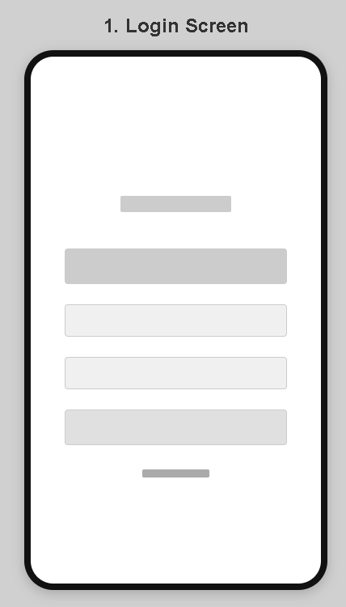
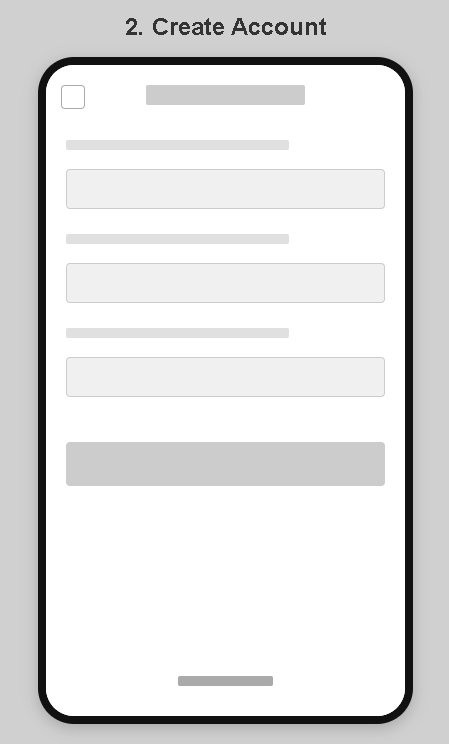
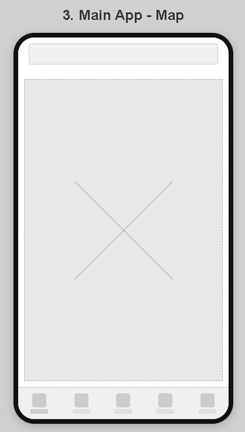
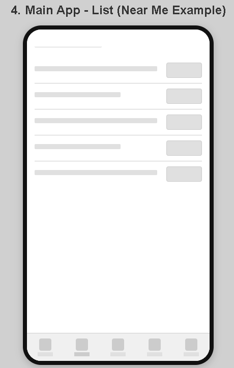

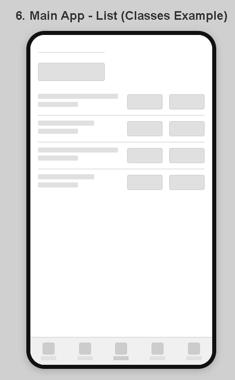

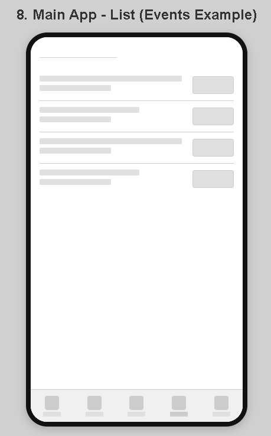


Gallery of low-fidelity wireframes for key screens.
Rationale Behind Layout Decisions
- Bottom Navigation: Chosen for reachability and persistent access to primary sections, common in mobile apps.
- Card-Based Lists: Used for Classes, Events, and Near Me results to provide clear, tappable targets and organized information chunks.
- Prominent Search Bar (Map): Placed at the top for easy access, a standard convention for map interfaces.
- Clear Call-to-Action Buttons: Buttons like "Navigate," "Add Class," "Link Canvas," were made distinct and clearly labeled.
- Standard Form Layouts: Used familiar top-aligned labels and input fields for login, account creation, and adding items.
Feedback on these wireframes helped refine the flow and ensure core elements were present before moving to visual design.
9. Usability Considerations (Heuristics)
Throughout the design process, we aimed to adhere to established usability principles to create an effective and user-friendly experience. Here are a few examples based on Nielsen's Heuristics:
1. Visibility of System Status
How it's reflected: When navigating, the app shows the current step, estimated time remaining, and the route on the map. When Canvas is connected, the settings screen clearly indicates the connection status. Loading states would be used for data fetching.
Why it's important: Keeps users informed about what's happening, reducing uncertainty and building trust.
2. Match Between System and the Real World
How it's reflected: Uses familiar campus building names and standard map conventions. Icons like a graduation cap for 'Classes' or a calendar for 'Events' leverage common associations. Language used is straightforward and avoids technical jargon.
Why it's important: Makes the interface feel intuitive and easier to learn because it aligns with the user's existing mental models and language.
3. User Control and Freedom
How it's reflected: Users can easily cancel navigation, go back from any screen using standard back buttons/gestures, disconnect their Canvas account, and log out. Clear confirmation dialogues are used for destructive actions like deleting an account.
Why it's important: Allows users to easily undo mistakes or change their minds, fostering a sense of confidence and exploration without fear of irreversible consequences.
4. Consistency and Standards
How it's reflected: Uses a consistent color scheme, typography, and button styles throughout the app (defined in the Design System). The bottom navigation remains persistent. Actions like tapping list items to view details are consistent across sections.
Why it's important: Reduces learning load; users don't have to wonder whether different words, situations, or actions mean the same thing in different contexts.
5. Aesthetic and Minimalist Design
How it's reflected: Focused on presenting essential information clearly. Avoided cluttering screens with irrelevant or rarely needed information. Used whitespace effectively to separate content blocks and improve readability.
Why it's important: Ensures that the interface focuses on the user's primary goals without unnecessary distractions, improving task efficiency and visual appeal.
Usability Testing & Iteration
We conducted usability tests with UNT students using the high-fidelity prototype created in Figma. Participants were given specific tasks (e.g., "Find your CSCE 1030 class and start navigation," "Find a place to eat near the Union," "Check upcoming events") and asked to think aloud as they interacted with the prototype.
💡 Key Testing Insights & Actions Taken 💡
- Insight: While the concept was well-received, some users were initially unsure if the app was solely for classes or broader campus use.
Action: Improved onboarding screens and introductory text to clarify the app's full scope (navigation, events, POIs, etc.). - Insight: The Canvas integration was highly valued, especially by newer students, confirming its importance.
Action: Ensured the Canvas linking process was prominent and easy to find in settings. - Insight: Users requested more granular filters for "Near Me" (e.g., specific services, types of food) and "Events" (e.g., by date, category, sponsoring organization).
Action: Added more filter options and potentially a dedicated filter interface for these sections in future iterations (as shown in the 'Near Me' example below). - Insight: Some map touch targets (like small building icons) needed adjustment for easier interaction on mobile screens.
Action: Increased the tappable area size around key map elements. - Insight: Minor confusion arose around the meaning of specific icons used in the initial high-fidelity designs.
Action: Revised icons based on feedback, opting for more universally understood symbols or adding text labels where necessary.
Iteration Example: Refining 'Near Me' Filters
A key piece of feedback was the desire to filter the "Near Me" list more effectively. Initially, it was just a list. Based on testing, we introduced filter chips.

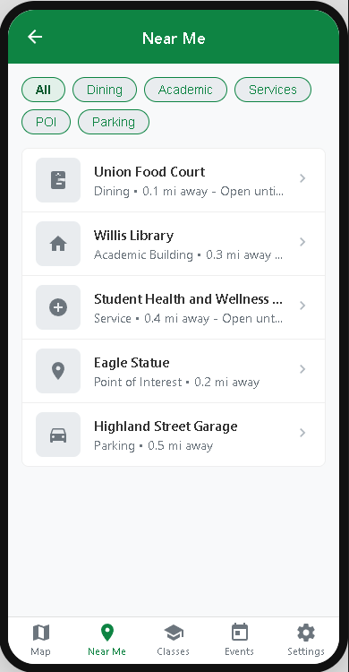
This iterative process of prototyping, testing, and refining was crucial for improving the usability and effectiveness of the final design.
10. High-Fidelity UI Design
Selected High-Fidelity Screens
This design phase acted as a mid-point between out wireframes and the final product, allowing us to fully define the structure of our app without having to insert all the content.


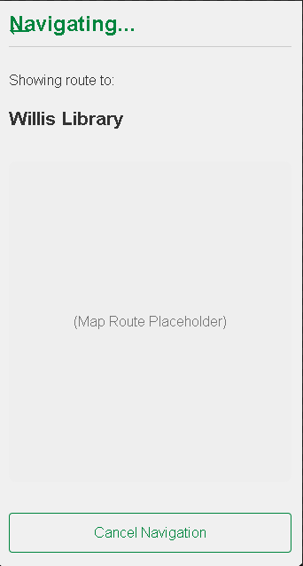

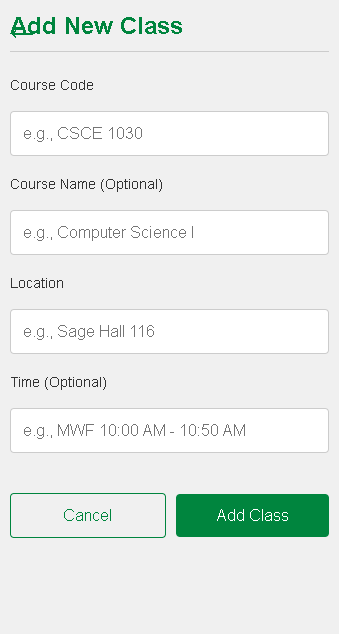

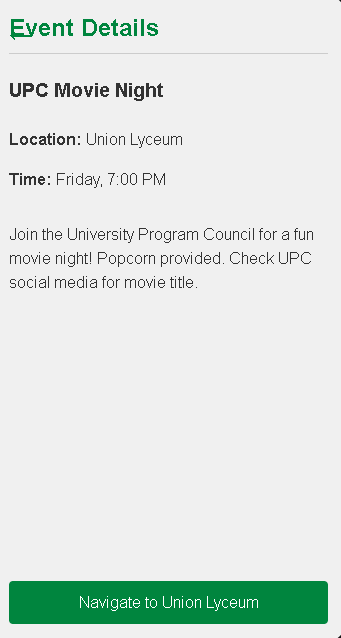

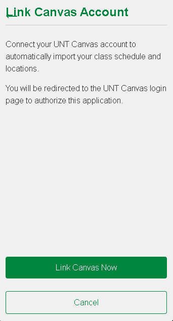
The low-fidelity wireframes and usability testing insights guided the development of the high-fidelity user interface. We applied a consistent visual style based on UNT's branding while prioritizing clarity and ease of use.
Design System & Branding
A basic design system was established in Figma to ensure consistency across all screens. Key elements included:
- Colors: Primarily used UNT Green (`#00853E`) for calls to action and branding accents, combined with neutral grays, black, and white for text, backgrounds, and UI elements. Secondary colors were used sparingly for status indicators or specific components.
- Typography: Employed the 'Inter' font family for its readability on digital screens, using different weights and sizes to establish visual hierarchy.
- Icons: Selected clear, recognizable icons, primarily using a filled style for clarity.
- Components: Created reusable components for buttons, cards, list items, and navigation elements.

Explanation of Design Decisions
- The clean interface with ample white space aims to reduce cognitive load.
- UNT Green is used strategically for primary actions to draw user attention.
- Card layouts provide digestible information chunks with clear tap targets.
- High contrast ratios were considered for text and background combinations (see Accessibility section).
- Visual feedback (like button states) was incorporated into the prototype.
[Add any other specific rationale behind your visual design choices.]
Final Screens & Key Flows
The following galleries showcase the final look and feel of the UNT Navigator app across its main functions:
Login & Onboarding Flow


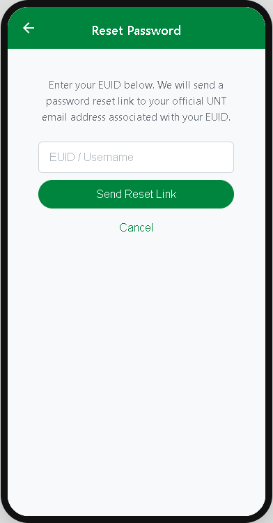
Finding & Navigating to a Class Flow


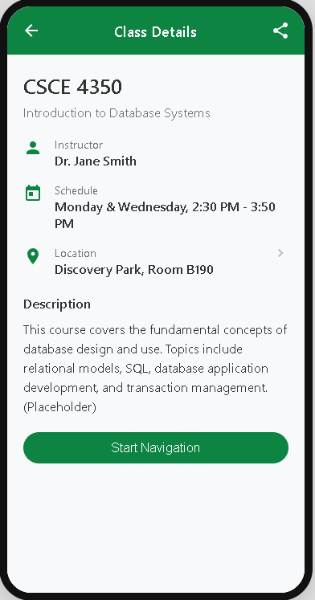
Using "Near Me" with Filters Flow

Finding & Engaging with Events Flow

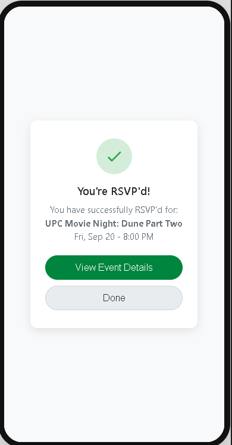
Settings & Account Management Flow (incl. Delete)
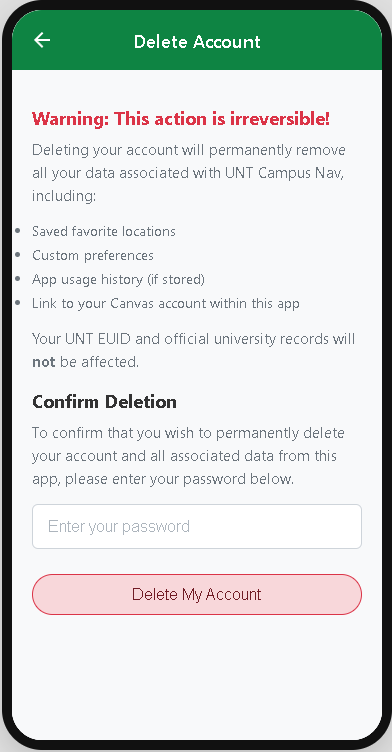
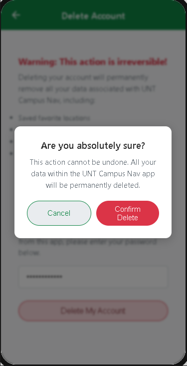
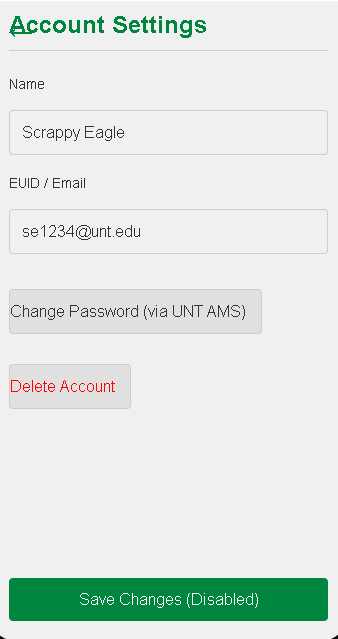
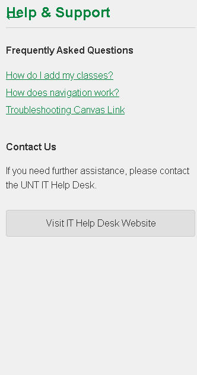
Interactive Prototype
Explore the final high-fidelity prototype to experience the key user flows:
11. Accessibility Considerations
We aimed to incorporate accessibility best practices to ensure UNT Navigator could be used by a wider range of students, including those with disabilities.
What accessibility guidelines did you follow?
We primarily considered principles from the **Web Content Accessibility Guidelines (WCAG) 2.1**, focusing on AA level conformance where feasible within the scope of a student project. Key areas included Perceivability, Operability, Understandability, and Robustness.
[Be specific if you targeted particular guidelines or used accessibility checking tools.]
Specific Design Decisions Made to Be Inclusive
- Color Contrast: We checked color combinations, particularly text on backgrounds and interactive elements against their surroundings, aiming for at least a 4.5:1 contrast ratio for normal text and 3:1 for large text and UI components (WCAG 1.4.3 & 1.4.11). The use of UNT Green (`#00853E`) on white provides good contrast.
- Clear Typography: Chose 'Inter', a sans-serif font known for good legibility. Used adequate font sizes (minimum 16px for body text generally) and line spacing to aid readability (WCAG 1.4.12 - Text Spacing - considered).
- Focus Indicators: Ensured interactive elements (buttons, links, form fields) would have visible focus indicators when navigating via keyboard or assistive technology (though full implementation depends on development) (WCAG 2.4.7).
- Alternative Text (Consideration): While primarily visual, for key images conveying information (like map icons or event posters), we planned for alternative text descriptions to be added during development (WCAG 1.1.1).
- Layout Predictability: Maintained consistent layout structures and navigation patterns to make the interface predictable for users of screen readers or magnifiers (WCAG 3.2.3 - Consistent Navigation).
- Appearance Options: Included placeholders for Light/Dark/High Contrast modes in the settings, acknowledging the need for user customization (WCAG 1.4.8 - Visual Presentation - providing options).
12. Reflection & Learnings
What worked well in our process?
- Starting with user research (interviews) was crucial for validating the problem and understanding user needs before jumping to solutions.
- Rapid ideation techniques (Crazy 8s) helped generate diverse ideas quickly and avoid getting stuck on initial concepts.
- The iterative cycle of prototyping (low-fi to hi-fi) and usability testing provided invaluable feedback that directly shaped and improved the final design. Seeing users interact with the prototype highlighted issues we hadn't anticipated.
- Establishing a basic design system before prototyping helped maintain visual consistency and sped up the high-fidelity design phase.
- Working collaboratively allowed us to leverage different perspectives and skills.
What would you do differently?
- Conduct more rounds of usability testing, perhaps earlier with low-fidelity wireframes, to catch fundamental structural issues sooner.
- Involve students with disabilities in usability testing to get direct feedback on accessibility features.
- Define the success metrics more rigorously at the project's outset and plan how to measure them more concretely.
- Explore indoor mapping capabilities more deeply during the research phase, as this was a frequently mentioned desire but technically complex.
What did you learn about UX and teamwork?
- Learned the practical application of the UX design process, from research synthesis to iterative design and testing.
- Gained a deeper appreciation for user-centered design – constantly asking "Who are we designing for?" and "Does this meet their needs?".
- Understood the importance of clear communication and role definition within a team to ensure everyone contributes effectively and stays aligned.
- Experienced the challenge and reward of synthesizing feedback (from users and team members) into design decisions.
- Recognized that UX design is an ongoing process of learning, iterating, and improving, and rarely perfect on the first try.
13. Team Credits
This project was a collaborative effort by the following team members:
- Rowland Foster: Developed prototypes, design system and contributed to ideation and UX interviews.
- Abyan Huq: Facilitated ideation sessions, created user persona, and contributed to wireframing.
- Rishav Dahal: Conducted UX interviews, usability testing sessions, and contributed to high-fidelity prototypes.